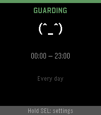
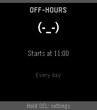
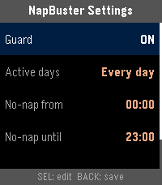
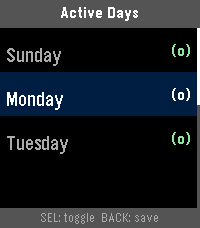

Your watch won't let you nap.
Daytime dozing steals your night. NapBuster reads your heart rate, spots a nap forming in minutes, and buzzes it away — entirely on your Pebble.
A background worker guards your configured no-nap hours with two-tier detection. Heart rate is the primary signal — as you drift off, your HR sinks below your awake baseline. Motion (VMC) is the gate that rules out false alarms while you're up and about.
While guarding, NapBuster samples your heart rate every 60 seconds. When the smoothed value drops 8–20% (your choice) below your anchored awake baseline and you're very still, a streak starts counting.
After ~4 minutes of sustained evidence: a quiet double pulse. If you were just relaxing, you'll barely notice. If you were drifting off, it's enough to break the slide.
Still sinking at ~10 minutes? The full repeating alarm fires and keeps buzzing until you dismiss it — or snooze for 10/30 min if you've earned it.
Your reference HR never chases you into a nap: it moves up freely (unless you're exercising) but only moves down when movement proves you're awake. A rolling average can't do that.
On every Pebble — including watches without a heart-rate sensor — the OS's own sleep classification is a fallback trigger. Slower (45–90 min), but it catches what Tier 1 can't.
Outside your no-nap window, NapBuster piggybacks on samples the OS
takes anyway — zero extra cost. Inside the window it requests
60-second HR sampling; that's the one real spend, and it stops the
moment the window closes. (Tunable via HR_BOOST_PERIOD_SECS.)




Owned 60 s HR cadence inside the guard window — not the OS's lazy 10-minute default.
Gentle nudge first; the full alarm only if you keep sinking. Both time-based, not sample-count roulette.
10 or 30 minutes via the Wakeup API — works even if the app closes.
Guard weekdays, weekends, or any custom set of days and hours.
Gentle, Medium, Strong — pulse-density patterns, test-buzzed as you pick.
Sensitive / Balanced / Conservative HR-drop thresholds to match your physiology.
HR, baseline, motion, streak and analysis age right on the watch face — see it working.
OS sleep classification backs up the HR engine on all supported watches.
| Platform | Watch | Detection |
|---|---|---|
| emery | Pebble Time 2 (primary target) | Tier 1 (HR + motion) + Tier 2 |
| diorite | Pebble 2 HR | Tier 1 (HR + motion) + Tier 2 |
| basalt | Pebble Time / Time Steel | Tier 2 only (no HR sensor) |
| chalk | Pebble Time Round | Tier 2 only (no HR sensor) |
Requires Pebble Health enabled in the rePebble mobile app (Devices → Health).
# one-time: pebble-tool needs Python 3.11 uv venv ~/.pebble-venv --python 3.11 ~/.pebble-venv/bin/pip install pebble-tool ~/.pebble-venv/bin/pebble sdk install latest # build git clone https://github.com/JoLeungGitHub/nap-buster.git cd nap-buster ~/.pebble-venv/bin/pebble build # → build/napbuster.pbw # install to your watch (enable Dev Connect in the rePebble app first) ~/.pebble-venv/bin/pebble login ~/.pebble-venv/bin/pebble install --cloudpebble
Full SDK setup instructions at developer.repebble.com/sdk.